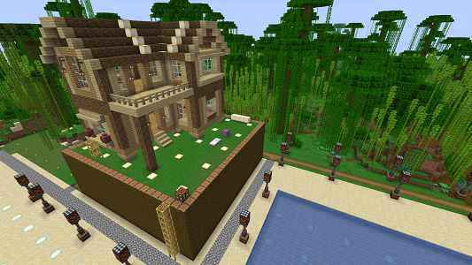
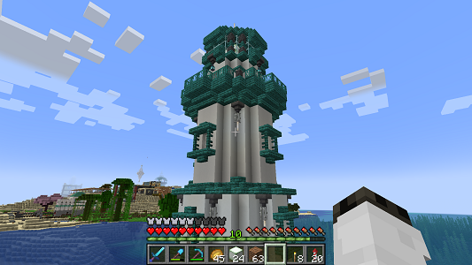

施設建物紹介
#gak_00 楽器奏者邸

| build data | 2024/--/-- | 座標 | x:____ y:____ z:____ |
|---|
島の南東にある小島に現れた楽器奏者の大きな家。妙に高い、抹茶カステラかという土台と それに通ずる竹林ジャングルの小路をもち、xciss島へ竹製の橋をかけている。
小路は日照センサーにより自動点灯する街灯が点在し、地味にハイテク。
なおこの小島は別に名前はついていない。つけてもいいのよ？
#gak_01 東岸の塔台

| build data | 2024/11/09 | 座標 | x:____ y:____ z:____ |
|---|
楽器奏者が邸を建設した小島の西岸を整地し、xciss島との間を照らすように建築した灯台。 xciss島西岸にパルプンテが建造した灯台と同タイプのデザインで、こちらは青緑色の屋根となっている。
また、この灯台の周囲はキチリと四角く、港湾といった塩梅に整備されていて文明を感じる。